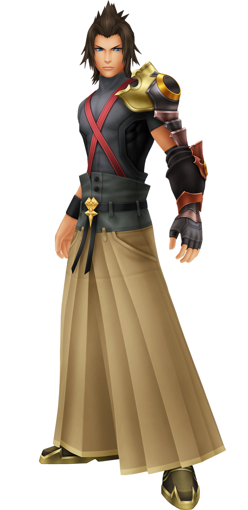
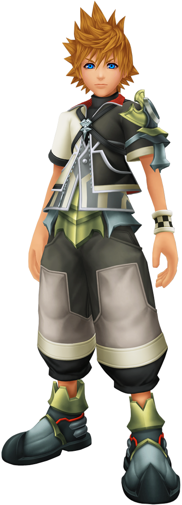
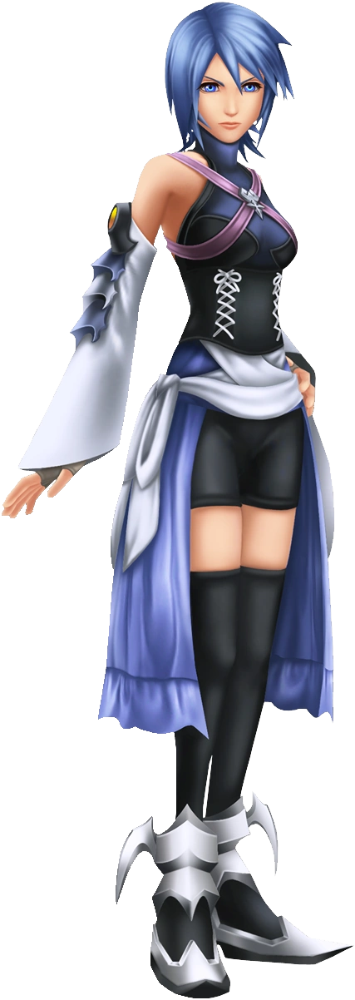

This paper will be about Kingdom Hearts Birth by Sleep and one key thing that is prevelant to the story; manipulation and the effects of it on everyone involved, not just the victim. Here is an image of the three characters of the game who are directly affected by Xehanort.

These characters are named Terra, Aqua, and Ventus respectively. As stated earlier, they are directly affected by Xehanort's manipulation, and met unfortunate fates in their debut game.
There is a surprising amount of emotion shown throughout Birth by Sleep; fear, doubt, betrayal, sadness, and even rage. We'll use Anzieu's theory for this portion, before moving on to the rest. Now, Terra, Aqua and Ventus likely have normal human development and likely had their needs met prior to the story in Birth by Sleep. However, in each route, they each go through hardships, some where their "cries" are not met. Something to note is that Kingdom Hearts as a series is known for having all characters openly shown emotion. For this section, I will be refering to Anzieu's writings in The Skin Ego(note 1).
It's quite simple if you break down each character's routes. Let's start with Terra, who was the most affected by Xehanort's manipulation. He had been led astray, he thought Aqua and their master, Eraqus, truly distrusted him and left to be on his own, fought Master Eraqus and watch him be killed in front of him, and at the end of his route is possessed by Xehanort and his will going to his armor and creating Lingering Will. Although Terra experiences serious doubts towards not just himself, but at one point his own friends and even master as he is manipulated by Master Xehanort, through sheer will alone, he kept himself tethered to the realm of light as his will possesses the armor. At the end of his route, Terra says this final quote as the screen fades to black and his back faces the viewer. 'Aqua... Ven... One day, I will set this right." And so for over ten long years Terra patiently waits for the day to finally return as himself and free himself from Xehanort's influence. During that time, he was in isolation. Who knows how that greatly effected Terra, who by that point is Lingering Will, regardless of just how strong Terra's will is. It is a great testament to his character that even in isolation and all that happened to him, he chooses to keep going, even if all of his emotions were potentially not tended to during this time period. 
Next character I'll be talking about in regards to Anzieu's theory is Ventus. While there isn't too much to discuss of him, there is something relating to him in terms of emotions and not having his needs met, which in turn leads to Ventus being another victim of Xehanort's manipulation and falling into a decade long slumber. Ven is the youngest of the three, and for a long time after Xehanort brought Ventus to the Land of Departure and asked Eraqus to leave, he wasn't allowed to go to oher worlds. There is even a line where Ventus mentions that no matter how many times he's asked, Eraqus refused to let him leave the Land of Departure. Xehanort used that to his advantage and turns Ventus against Eraqus, which almost causes Ventus to be destroyed by Eraqus due to Ventus being half of what was needed to make the X-Blade. Another thing to mention is that Ventus was often treated as a little kid by most people, but especially his friends and Eraqus. Which ties what Azieu says about what can happen if a child's needs isn't met and affects how they will be able to fend for themselves. In the end of Ventus' route, after he defeats Vanitas,the darkness from Ventus' heart, Ventus' heart leaves him which cause Ventus to fall into a decade long slumber. 
The final character I'll discuss for the Aznieu section is Aqua. Like Terra and Ventus, she too got the short end of the stick. After becoming a Keyblade Master, not only is she tasked with traveling to other worlds to defeat the Unversed, but Eraqus requests that she not only brings home when he goes after Terra, but to keep an eye on Terra and bring him back to the Land of Departure should the darkness in his heart become too much. Throughout the first act of the game, Aqua is defending Terra. But as mentioned in Terra's section, manipulation led to distrust, and Aqua says the wrong things and leads to distrust and her friends distancing themselves from her for a time before the final battle occurs. Now what about her fate? Well, she unfortunately has to fight Terra, who by that point is possessed by Xehanort. But after he was defeated and seemingly saved from Xehanort's influence, Aqua sacrificed herself so that Terra wouldn't be in the realm of darkness. Okay, but how does Anzieu's theory correlate to this? Because of her sacrifice, Aqua is trapped in the realm of darkness and is all alone. She walks aimlessly for a time, left alone just her thoughts and the enemies that reside in the realm of darkness. The only hope she has is to one day see her friends again and wake Ventus up as she traverses through the hellish landscape for the equivalence of a decade. Her desire to see her friends again isn't heard by anyone as she journeys alone, meaning that the need tos ee her friends again goes unmet for a long time, psychologically and emotionally affecting the Keyblade Master. 
For this next bit, I want you to take a listen to these songs, as they are the themes for Terra, Aqua, Ventus and Xehanort before you read the next paragraph But this next section, I will apply Sigmund Freud's principle from Beyond the Pleasure Principle(note2) and Brian Massumi article The Autonomy of Effect(note 3) as both can be applied to the audio recordings I am sharing with you.
There is a specific reason why I chose these four songs, as they all convey specific emotions and feelings for not just the viewers, but also encapsulates the characters in general. For Terra's theme, it's very powerful and sounds so determined. It really encaspulates Terra's strong will and his loyalty to his friends despite everything that Xehanort does to lead him astray and later become his vessel. Even though Terra's body gets possessed by Xehanort and thus loses control of his body, he is able to take control of his armor through sheer will and is willing to wait for as long as it takes to one day return despite losing control. This ties into what Freud has said about traumatic events in one's life, and the need to have some kind of control whether it be real or false. In Terra's case, because of not only being manipulated, fighting and then subsequently watching his father figure die in front of him AND becoming Xehanort's vessel? All of those are very traumatic events Terra as he loses control of his heart and body, but he is able to gain control in some form and in response to what happened through him possessing his armor, which creates Lingering Will.
For Ventus' theme, it is very calm and not as intense as Terra's theme song. It is very light, and conveys a sense peace despite everything that Ventus goes through. He doesn't remember his past, his heart was split by Xehanort when he took the darkness out of Ventus' heart, he tried to find Terra, and later had to fight vanitas and ultimately fell into a deep slumber. While his themes conveys a sense of peace and some innocence depite what he has been through, if we were to apply Freud's writings to coincide with the principles of Massumi's paper on emotions? Ventus doesn't have the same amount of control as Terra does. Sure, Ventus took things into his own hands to find Terra after being told that his friend would be a different person, throughout the game, Ventus doesn't have a lot of control on what is going on in his surroundings. Even when he and Vanitas fought in Ventus's heart, Ventus didn't have control of his body due to Vanitas controlling it while fighting Aqua in her route. Despite what he goes through, when you take into account that Ventus does go into a decade long slumber, his theme could be a sort of "lullaby" with all of this context.
Aqua's theme, without a shadow of a doubt, is very melancholic. She is the character who loses the most amount of control. She and her friends are all deeply affect by Xehanort's manipulation, she lost not only Master Eraqus, who was a father figrure to Terra, her and Ventus, but she lost her friends to what Xehanort had planned and she became trapped in the realm of darkness for so long. This lack of control shows that the events that Xehanort inflicted on her and her friends, Aqua truly didn't have a lot of control, if anything. This is especially true when she was tasked to bring Ventus back to the land of Departure and to keep watch over Terra, which led to major distrust until the final battle. She even had moments where she would defend Terra when villains would say that he did one thing, but then scold him the next. Overall, while she does have her flaws in her judgement, she was still just as deeply affected by the events that happened in hers and her friends' lives, and Aqua's theme encapsulates that perfectly.
Lastly, Xehanort's theme is the most sinister of the bunch. When first hearing it, something doesn't sound right to the listener. That Xehanort has something up his sleeve and that he'll use whatever tactics he can to get what he wants. The emotions this theme portrays in particular is the sense of unease when applying what Massumi wrote on emotions. And when applying Freud's theory, Xehanort has the most control throughout the whole story. And from the outside looking in, while his theme can scream to the player that Xehanort is up to no good and is leading characters astray and driving a wedge in their friendship to isolate his target, the characters do not know that. After all, and this is true for any case of manipulation, manipulators will sprinkle truths in their lies and say things that the person they're manipulating thinks they want to hear and isolate them until they have full control. This theme is perfect for someone like Xehanort.
In conclusion, while the Kingdom Hearts series does have Disney properties and may be silly, even chaotic at times, the series as a whole is very capable of tackling more heavy issues. And Birth by Sleep is the perfect example of this because of just how prominent the themes of manipulation and mistrust are throughout the game.
(note 1): Anzieu, Didier The Skin Ego translated by Chris Turner (New Haven: Yale University Press, 1989).
(note 2): Freud, Sigmund Beyond the Pleasure Principle. James Strachey (New York and London: Norton, 1990 (1920)).
(note 3:) Massumi, Brian "The Autonomy of Affect" in Cultural Critique. number 31. Autumn 1995.